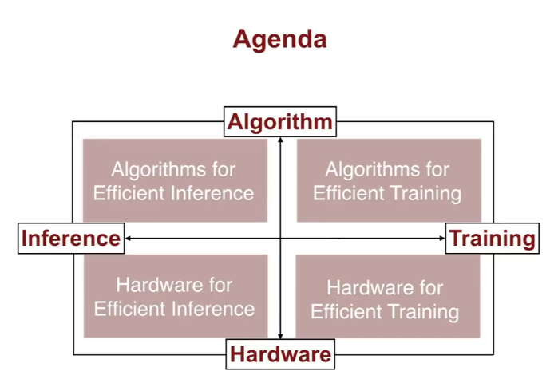

Appendix 1: Algorithms for Efficient Inference
Appendix 1.1 Deep Compression (aka, Pruning, Quantization, and Huffman Encoding)
Pruning + Weight Sharing (Trained Quantization)
Appendix 1.2: Results of Quantization on Accuracy
Appendix 1.3: Effects of Low Rank Approximations on Accuracy
For fully connected layers, the below paper proposes tobreak down one fully connected layer into lots of fully connected layers.
Appendix 1.4: Binary /Ternary Weights at Inference Slides
Appendix 1.5 Speedup from Winograd Convolutions
More details about the Winograd Convolution: https://www.youtube.com/watch?v=Xh2hBMUYKAE.
Appendix 2. Optimal Hardware for Efficient Inference
2.1 Google TPU
This is Google’s NN workload in 2017 - 61% is dedicated to running Multi-layer perceptrons (for ads). LSTM (for Google langauge services) are 29%.
Performacne Bottlenecks:
In the left (sloped) region, you are bottle-necked by memory intensity.
X axis is ratio between FLOPs and memory bandwith overhead (FLOPS/byte of memory, listed as TPU Opt/Weight Byte in above table)
Y axis is the actual attainable peak performance.
If you’re only doing small operations, you are bottlenecked by memory bandwith, not arithmetic speed. Most NN do not have full utilization!
CNNs saturate the peak performance of TPU, but MLP and LSTM only use ~10% of potential throughput, because you cannot batch for real-time use cases.

Appendix N: Misc
Where is time and energy consumed by large models? in the memory access
To make deep learning more efficient, we should design hardware that improves memory access efficiency.

About Hardware:
Takeaway: use small representations for your numbers!
About SqeezeNet:
Han et al put out SqueezeNet. They used 1) Squeeze (1x1 conv) layers to reduce feature depth before convolution branches, 2) no fully connected layers. Everything is fully convolutional and the last layer is global average pooling. SqueezeNet is 50x smaller than AlexNet in its basic form and 510x smaller than AlexNet in compressed form. Model inference is ~3x faster on CPU and GPU.